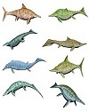

| Highball | Sour | Tiki | Iconic | Other | |
|---|---|---|---|---|---|
| Whiskey | Ward 8 | Whiskey sour | Port Light | Manhattan | Rob Roy |
| Rum | Dark n Stormy | Daiquiri | Zombie | Mojito | Planter's Punch |
| Gin | Gin tonic | Aviation | Singapore Sling | Martini | Ramos Gin Fizz |
| Tequila | Tequila Sunrise | Margarita | N/A | Margarita | El Capitan |
| Brandy | Horse's Neck | Side Car | Fog Cutter | Side Car | Corpse Reviver #1 |
| Foot 1 | Foot 2 | ||||
 From Wikipedia: Ichthyosaurs (Greek for "fish lizard") were large marine reptiles. Ichthyosaurs belong to the order known as Ichthyosauria or Ichthyopterygia ('fish flippers').Ichthyosaurs thrived during much of the Mesozoic era; based on fossil evidence, they first appeared approximately 250 million years ago and at least one species survived until about ninety million years ago into the Late Cretaceous.
Ichthyosaur species varied from one to over sixteen metres in length. Ichthyosaurs resembled both modern fish and dolphins. Their limbs had been fully transformed into flippers, which sometimes contained a very large number of digits and phalanges. At least some species possessed a dorsal fin. Their heads were pointed, the jaws often equipped with conical teeth to catch smaller prey. Some species had larger bladed teeth to attack large animals. The eyes were very large, probably for deep diving. The neck was short and later species had a rather stiff trunk. These also had a more vertical tail fin used for a powerful propulsive stroke. The vertebral column, made of simplified disc-like vertebrae, continued into the lower lobe of the tail fin. Ichthyosaurs were air-breathing, bore live young, and were probably warm-blooded.